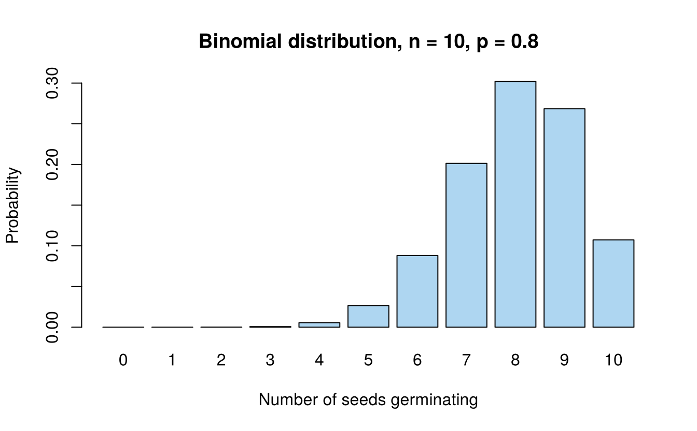
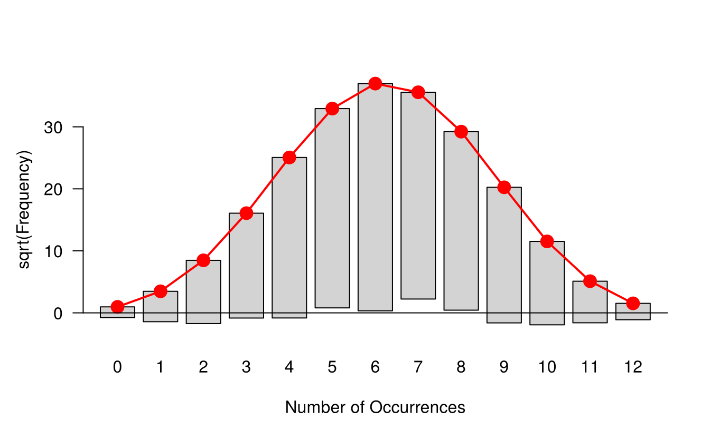
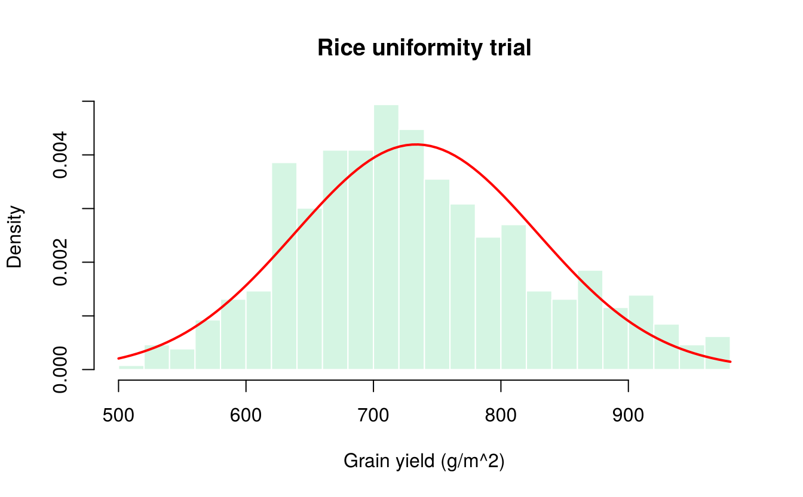
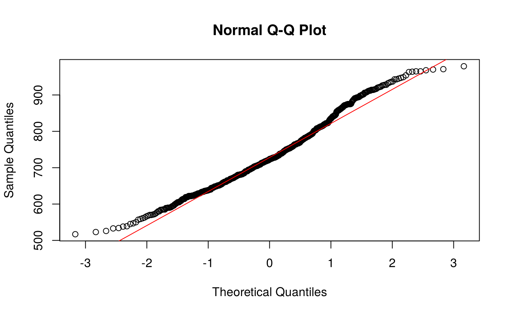
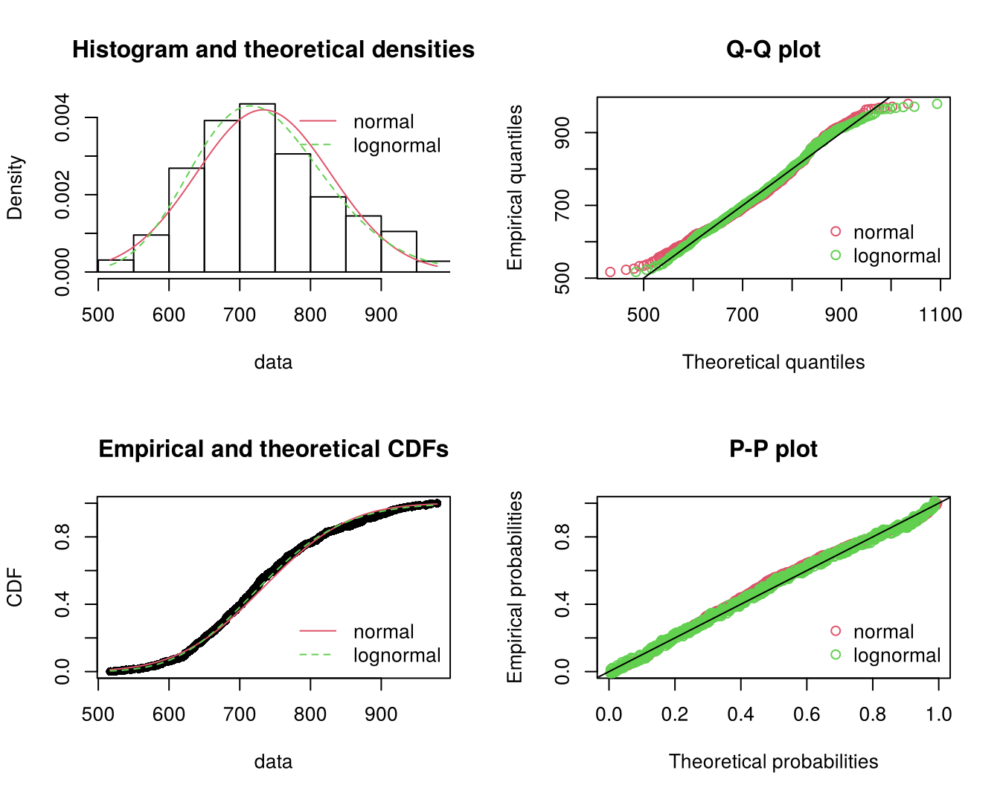

10 Probability distributions and goodness of fit
A probability distribution describes how the values of a random variable are spread. Discrete distributions (binomial, Poisson) describe counts; continuous distributions (normal, log-normal, t, \(\chi^2\), F) describe measurements. In practice we ask two questions:
- Fitting: if the data follow a certain distribution, what are its parameters?
- Goodness of fit: do the data actually follow that distribution?
10.1 Distribution functions in R
For every standard distribution R has four functions, named by a prefix and the distribution’s name:
| Prefix | Gives | Example (normal) |
|---|---|---|
d |
density (continuous) or probability \(P(X = x)\) (discrete) | dnorm(x, mean, sd) |
p |
cumulative probability \(P(X \le x)\) | pnorm(q, mean, sd) |
q |
quantile: the value \(x\) with \(P(X \le x) = p\) | qnorm(p, mean, sd) |
r |
random numbers | rnorm(n, mean, sd) |
The names of common distributions are binom, pois, nbinom, geom, hyper, norm, lnorm, unif, exp, gamma, t, chisq and f.
# Binomial: P(X = 3) when n = 10, p = 0.2
dbinom(3, size = 10, prob = 0.2)#> [1] 0.2013
# Normal: P(X <= 1.96) for the standard normal
pnorm(1.96)#> [1] 0.975
# Critical values used in tests
qnorm(0.975) # z for a two-sided 5% test#> [1] 1.96
qt(0.975, df = 12) # t with 12 df#> [1] 2.179
qchisq(0.95, df = 4) # chi-square with 4 df#> [1] 9.488
qf(0.95, df1 = 3, df2 = 12) # F with (3, 12) df#> [1] 3.49The last four lines replace the statistical tables at the back of textbooks.
10.2 Binomial distribution
A random variable \(X\) follows a binomial distribution with parameters \(n\) and \(p\) if it counts the number of “successes” in \(n\) independent trials, each with the same probability of success \(p\):
\[P(X = x) = \binom{n}{x} p^x (1-p)^{n-x}, \qquad x = 0, 1, \ldots, n\]
with mean \(np\) and variance \(np(1-p)\).
Example. The germination percentage of a seed lot is 80%. If 10 seeds are sown in a pot, what is the probability that (a) exactly 8, (b) at least 8 seeds germinate?
dbinom(8, size = 10, prob = 0.8) # (a) P(X = 8)#> [1] 0.302#> [1] 0.6778
1 - pbinom(7, size = 10, prob = 0.8) # (b) the same, using pbinom#> [1] 0.6778
barplot(dbinom(0:10, 10, 0.8), names.arg = 0:10, col = "#AED6F1",
xlab = "Number of seeds germinating", ylab = "Probability",
main = "Binomial distribution, n = 10, p = 0.8")
10.2.1 Fitting a binomial distribution
To fit a binomial distribution to observed frequencies, estimate \(p\) from the sample mean, \(\hat p = \bar x / n\), and compute the expected frequencies \(N \cdot P(X = x)\), where \(N\) is the total frequency.
We use a classic data set: the number of boys in 6115 families with 12 children each, recorded in Saxony in the 19th century (Geissler’s data, available as Saxony in the vcd package).
library(vcd)
obs <- as.vector(Saxony) # observed frequencies
x <- 0:12 # number of boys
N <- sum(obs)
n <- 12
xbar <- sum(x * obs) / N
p_hat <- xbar / n
c(N = N, mean = xbar, p_hat = p_hat)#> N mean p_hat
#> 6115.0000 6.2306 0.5192
expected <- N * dbinom(x, size = n, prob = p_hat)
data.frame(boys = x, observed = obs, expected = round(expected, 1))#> boys observed expected
#> 1 0 3 0.9
#> 2 1 24 12.1
#> 3 2 104 71.8
#> 4 3 286 258.5
#> 5 4 670 628.1
#> 6 5 1033 1085.2
#> 7 6 1343 1367.3
#> 8 7 1112 1265.6
#> 9 8 829 854.2
#> 10 9 478 410.0
#> 11 10 181 132.8
#> 12 11 45 26.1
#> 13 12 7 2.310.2.2 Chi-square test of goodness of fit
The goodness of fit is tested with Pearson’s chi-square statistic
\[\chi^2 = \sum_{i=1}^{k} \frac{(O_i - E_i)^2}{E_i}\]
where \(O_i\) and \(E_i\) are the observed and expected frequencies in class \(i\). Under the null hypothesis that the data follow the fitted distribution, \(\chi^2\) has approximately a chi-square distribution with \(k - 1 - m\) degrees of freedom, where \(k\) is the number of classes (after pooling) and \(m\) is the number of parameters estimated from the data.
The chi-square approximation needs expected frequencies that are not too small. A common rule is to pool adjacent classes until every expected frequency is at least 5.
Here the expected frequencies for 0 boys (0.9) and 12 boys (2.3) are below 5, so we pool them with their neighbours:
# Pool classes 0 and 1, and classes 11 and 12
O <- c(sum(obs[1:2]), obs[3:11], sum(obs[12:13]))
E <- c(sum(expected[1:2]), expected[3:11], sum(expected[12:13]))
chisq_stat <- sum((O - E)^2 / E)
k <- length(O) # number of classes after pooling
df <- k - 1 - 1 # one parameter (p) estimated
p_value <- pchisq(chisq_stat, df, lower.tail = FALSE)
c(chi_square = chisq_stat, df = df, p_value = p_value)#> chi_square df p_value
#> 1.058e+02 9.000e+00 1.055e-18The p-value is far below 0.05, so the binomial distribution does not fit these data. There are more families with very few or very many boys than the binomial model predicts. This is a well-known result: the probability of a boy varies from family to family, which violates the binomial assumption of a constant \(p\) and inflates the variance.
The goodfit() function of vcd fits the distribution and tests the fit in one step (it uses the likelihood-ratio statistic, which is close to Pearson’s):
#>
#> Goodness-of-fit test for binomial distribution
#>
#> X^2 df P(> X^2)
#> Likelihood Ratio 97.01 11 6.978e-16
rootogram(gf)
In the rootogram, bars (the square roots of the observed frequencies) hang from the curve of square roots of expected frequencies. If the fit were good, the bottoms of the bars would lie close to the horizontal line at zero.
10.3 Poisson distribution
The Poisson distribution describes counts of rare, independent events in a fixed interval of time or space, such as the number of insects per plant, weeds per quadrat or bacterial colonies per plate:
\[P(X = x) = \frac{e^{-\lambda}\lambda^x}{x!}, \qquad x = 0, 1, 2, \ldots\]
Its mean and variance are both equal to \(\lambda\).
10.3.1 Fitting a Poisson distribution
\(\lambda\) is estimated by the sample mean. The classic example is von Bortkiewicz’s data on the number of soldiers killed by horse kicks per Prussian army corps per year (200 corps-years):
#> [1] 0.61
# Variance of the data: close to the mean, as a Poisson distribution requires
sum(obs * (x - lambda)^2) / (N - 1)#> [1] 0.611
expected <- N * dpois(x, lambda)
expected[5] <- N * ppois(3, lambda, lower.tail = FALSE) # last class is "4 or more"
data.frame(deaths = x, observed = obs, expected = round(expected, 2))#> deaths observed expected
#> 1 0 109 108.67
#> 2 1 65 66.29
#> 3 2 22 20.22
#> 4 3 3 4.11
#> 5 4 1 0.71Pool the last three classes so that the expected frequency is at least 5:
O <- c(obs[1:2], sum(obs[3:5]))
E <- c(expected[1:2], sum(expected[3:5]))
chisq_stat <- sum((O - E)^2 / E)
df <- length(O) - 1 - 1
c(chi_square = chisq_stat, df = df,
p_value = pchisq(chisq_stat, df, lower.tail = FALSE))#> chi_square df p_value
#> 0.06278 1.00000 0.80215The p-value is large, so the Poisson distribution fits the data well. The same conclusion follows from goodfit():
#>
#> Goodness-of-fit test for poisson distribution
#>
#> X^2 df P(> X^2)
#> Likelihood Ratio 0.8682 3 0.8331Counts of insects, weeds and diseased plants often have a variance much larger than the mean (over-dispersion) because individuals cluster. The negative binomial distribution then fits better: use goodfit(x, type = "nbinomial") or fitdistrplus::fitdist(x, "nbinom").
10.4 Normal distribution
The normal distribution with mean \(\mu\) and standard deviation \(\sigma\) has density
\[f(x) = \frac{1}{\sigma\sqrt{2\pi}} \exp\left\{-\frac{(x-\mu)^2}{2\sigma^2}\right\}\]
Example. Plant height of a variety is normally distributed with mean 80 cm and standard deviation 6 cm. What proportion of plants are (a) taller than 90 cm, (b) between 75 and 85 cm? (c) Below what height are the shortest 10% of plants?
pnorm(90, mean = 80, sd = 6, lower.tail = FALSE) # (a)#> [1] 0.04779#> [1] 0.5953
qnorm(0.10, mean = 80, sd = 6) # (c)#> [1] 72.3110.4.1 Fitting a normal distribution
We use the rice uniformity trial of Gomez and Gomez (1984) (gomez.rice.uniformity in agridat): a field of rice variety IR8 was harvested in 648 plots of 1 m × 1 m and the grain yield (g/m2) of each plot was recorded.
library(agridat)
y <- gomez.rice.uniformity$yield
mu_hat <- mean(y)
sigma_hat <- sd(y)
c(n = length(y), mean = mu_hat, sd = sigma_hat)#> n mean sd
#> 648.0 733.5 95.1
hist(y, breaks = 20, freq = FALSE, col = "#D5F5E3", border = "white",
main = "Rice uniformity trial", xlab = "Grain yield (g/m^2)")
curve(dnorm(x, mu_hat, sigma_hat), add = TRUE, col = "red", lwd = 2)
For a chi-square test with continuous data, group the data into classes and compute the expected frequency of each class from the fitted normal distribution:
breaks <- c(-Inf, seq(560, 920, by = 40), Inf)
O <- table(cut(y, breaks))
P <- diff(pnorm(breaks, mu_hat, sigma_hat))
E <- length(y) * P
cbind(observed = O, expected = round(E, 1))#> observed expected
#> (-Inf,560] 12 22.1
#> (560,600] 29 29.9
#> (600,640] 69 53.5
#> (640,680] 92 80.4
#> (680,720] 117 101.6
#> (720,760] 104 107.7
#> (760,800] 72 95.9
#> (800,840] 54 71.8
#> (840,880] 41 45.1
#> (880,920] 33 23.8
#> (920, Inf] 25 16.1
chisq_stat <- sum((O - E)^2 / E)
df <- length(O) - 1 - 2 # two parameters (mean, sd) estimated
c(chi_square = chisq_stat, df = df,
p_value = pchisq(chisq_stat, df, lower.tail = FALSE))#> chi_square df p_value
#> 32.37930842 8.00000000 0.00007964The chi-square test rejects the normal distribution (p < 0.001). The table shows why: there are fewer very low yields and more high yields than a symmetric normal curve predicts, i.e. the distribution is slightly skewed to the right.
10.4.2 Other tests of normality
Several tests are available for normality. With large samples they detect even small departures from normality, so always look at a graph too.
shapiro.test(y) # Shapiro-Wilk#>
#> Shapiro-Wilk normality test
#>
#> data: y
#> W = 0.98, p-value = 0.0000004
ks.test(y, "pnorm", mu_hat, sigma_hat) # Kolmogorov-Smirnov#>
#> Asymptotic one-sample Kolmogorov-Smirnov test
#>
#> data: y
#> D = 0.059, p-value = 0.02
#> alternative hypothesis: two-sidedWhen the mean and SD are estimated from the same data, the ordinary Kolmogorov–Smirnov p-value is too large (the test is conservative). The Lilliefors correction, nortest::lillie.test(y), or the Shapiro–Wilk test should be preferred for testing normality.

The Q–Q plot is nearly straight in the middle but curves at both ends, showing a slight right skew. With 648 observations, the tests detect this small departure.
10.5 Comparing candidate distributions with fitdistrplus
The fitdistrplus package (Delignette-Muller, Dutang, and Siberchicot 2023) fits distributions by maximum likelihood and compares them. Here we compare the normal and log-normal distributions for the rice yields:
library(fitdistrplus)
fn <- fitdist(y, "norm")
fl <- fitdist(y, "lnorm")
summary(fn)#> Fitting of the distribution ' norm ' by maximum likelihood
#> Parameters :
#> estimate Std. Error
#> mean 733.45 3.733
#> sd 95.03 2.640
#> Loglikelihood: -3871 AIC: 7745 BIC: 7754
#> Correlation matrix:
#> mean sd
#> mean 1.00000000 -0.00000112
#> sd -0.00000112 1.00000000#> Goodness-of-fit statistics
#> normal lognormal
#> Kolmogorov-Smirnov statistic 0.05943 0.0337
#> Cramer-von Mises statistic 0.55259 0.1436
#> Anderson-Darling statistic 3.47102 1.0708
#>
#> Goodness-of-fit criteria
#> normal lognormal
#> Akaike's Information Criterion 7745 7725
#> Bayesian Information Criterion 7754 7734
par(mfrow = c(2, 2))
denscomp(list(fn, fl), legendtext = c("normal", "lognormal"))
qqcomp(list(fn, fl), legendtext = c("normal", "lognormal"))
cdfcomp(list(fn, fl), legendtext = c("normal", "lognormal"))
ppcomp(list(fn, fl), legendtext = c("normal", "lognormal"))
The log-normal distribution has the smaller AIC and smaller Kolmogorov–Smirnov, Cramér–von Mises and Anderson–Darling statistics, so it describes these yields slightly better than the normal distribution.
Exercises
- A pesticide kills 70% of the insects it is sprayed on. For a group of 15 insects, find the probability that (a) exactly 10, (b) at most 8 are killed.
- The number of weeds per quadrat follows a Poisson distribution with mean 2.5. Find the probability that a quadrat has no weeds.
- Fit a Poisson distribution to the counts in the
InsectSpraysdata for spray C and test the goodness of fit. Repeat for all sprays together. Explain the difference. - Fit normal and log-normal distributions to the
Yieldof theplrvdata (agricolae) for the localityLM-02and compare them.